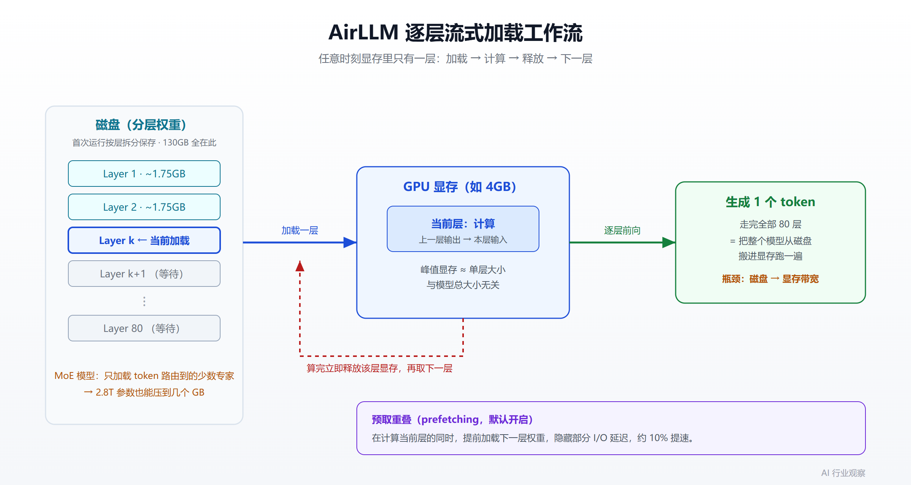
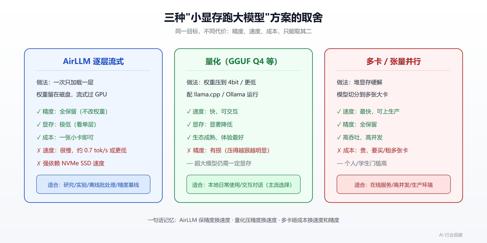

显存不够也能跑万亿参数模型：AirLLM 逐层流式加载原理与实战避坑指南
一个数字先摆在这里：Llama 3 的 70B 模型，FP16 权重约 130GB。按常规做法，光是把它塞进显存，就得两张各 80GB 的 A100。可 AirLLM 说，你用一张 4GB 的显卡就能跑——不量化、不蒸馏、不剪枝，权重一个 bit 都不动。
更离谱的是官方后来的数据：405B 的 Llama 3.1 跑在 8GB，671B 的 DeepSeek-V3 跑在约 12GB，而目前最大的开源模型 Kimi K3（2.8T 参数）在一张 RTX 6000 Ada 上端到端实测只占 3.72GB 显存。
参数量涨了几百倍，显存却几乎没动。这不是魔法，也不是营销话术里那种"黑科技压缩"。它背后是一个朴素到近乎"作弊"的观察：Transformer 推理时，其实一次只需要一层。本文就来把这件事拆开讲清楚——它怎么做到的、代价是什么、什么时候该用、什么时候别用。
先理解常规推理为什么这么吃显存
要看懂 AirLLM 的巧思，得先明白显存都花在哪了。跑一个大模型做推理，显存主要被三块吃掉：
- 模型权重本身：70B 模型 FP16 就是约 130GB，这是大头。
- KV 缓存（KV cache）：自回归生成时，为避免重复计算，把每个 token 的 key/value 存下来。它随上下文长度和 batch 大小增长，长上下文场景下能吃掉几十 GB。
- 注意力计算的中间激活：注意力机制的显存需求随输入长度呈二次增长，序列一长就很可观。
常规推理框架的默认前提是：整个模型必须同时驻留在显存里。因为下一秒要用哪层、哪个权重都不确定，索性全部装进去最省事。于是显存需求 ≈ 模型总大小，这就是"70B 必须几十上百 GB 显存"这条铁律的由来。
AirLLM 做的事，就是把这条"必须全部驻留"的前提给拆了。
核心机制一：逐层流式加载
Transformer 有一个常被忽略的结构性事实：它的层是严格顺序执行的。第 1 层的输出是第 2 层的输入，第 2 层的输出是第 3 层的输入……任意一个时刻，真正在做计算的只有一层，其余几十层都只是"排队等着"。
既然如此，为什么要把所有层都放在显存里？AirLLM 的答案是：不放。
它的流程是这样的：
- 把当前要计算的这一层权重从磁盘加载进显存
- 用它算出这一层的输出
- 算完立刻把这层权重从显存里释放掉
- 加载下一层，重复上述过程
这样一来，任意时刻显存里只有"一层的权重 + 少量中间状态"。峰值显存不再取决于模型总大小，而是取决于单层的大小。
这就是那个看似矛盾的数字的来源：70B 模型 FP16 精度下，单层权重大约 1.75GB，塞进 4GB 显卡绰绰有余。至于那 130GB 的完整模型？它一直躺在你的硬盘上，推理时一层一层地"流过"GPU，而不是一次性全部住进显存。

首次运行时，AirLLM 会先把原始模型按层"拆开"，以 safetensors 分片的形式保存到磁盘。这一步很吃磁盘空间（后面避坑部分会详细说），但只做一次，之后每次推理直接读分片。
核心机制二：MoE 模型按专家流式
上面讲的是稠密（dense）模型的"逐层"。但 2026 年最大的那批开源模型——Qwen3-235B、DeepSeek-V3、Kimi K3——都是稀疏 MoE（Mixture of Experts）架构。这类模型每一层里有很多个"专家"子网络，但每个 token 实际上只会被路由到其中很少的几个专家。
AirLLM 在 v3.0 之后针对 MoE 做了更细的处理：不是加载整层，而是只加载当前 token 真正路由到的那几个专家。
这就解释了 Kimi K3 那个反直觉的数字：2.8T 参数的模型，为什么显存占用反而比 70B 稠密模型还低（不到 4GB）？因为对每个 token 来说，需要动用的专家权重非常少，一次流式加载的量比一整个稠密层还小。参数总量在这里几乎变成了一个"和显存无关"的数字——它只决定你需要多大的硬盘。
如果你想更系统地理解 MoE 架构本身的取舍，可以参考我们之前写的 MoE 训练后加速实践。
核心机制三：块级权重压缩（可选，且不是传统量化）
AirLLM 默认不压缩，保持原始精度。但它提供了一个可选的加速开关——块级（block-wise）权重压缩，宣称最高能带来 3 倍推理提速，精度损失几乎可忽略。
这里有个容易混淆的点，作者也特意做了区分：它和常规量化不是一回事。
- 传统量化：为了真正提速，通常要同时量化权重和激活。这就得处理各种输入下的离群值（outlier），维持精度的难度更高。
- AirLLM 的做法：因为它的瓶颈根本不在计算，而在磁盘加载速度，所以只需要让"加载的体积"变小就行。于是它只量化权重、不碰激活，精度更容易保住。
启用也很简单，初始化时传一个参数：
from airllm import AutoModel
model = AutoModel.from_pretrained(
"garage-bAInd/Platypus2-70B-instruct",
compression='4bit' # 或 '8bit'，做块级量化以减小加载体积
)
前提是装好 bitsandbytes。如果你对量化本身的取舍感兴趣，可以延伸阅读 1-bit 量化选型指南，那篇讲的是另一条"压精度换资源"的路线。
最短上手路径
AirLLM 的接口刻意做得和普通 transformers 一模一样，一行 AutoModel.from_pretrained 自动识别模型类型，不用你手动指定模型类：
from airllm import AutoModel
MAX_LENGTH = 128
# 传入 Hugging Face 仓库 ID，几乎所有主流模型都支持：
model = AutoModel.from_pretrained("Qwen/Qwen3-32B")
# 换更大的模型，还是同一行：
# model = AutoModel.from_pretrained("Qwen/Qwen3-235B-A22B") # 235B，约 3GB
# model = AutoModel.from_pretrained("deepseek-ai/DeepSeek-V3") # 671B，约 12GB
input_text = ['What is the capital of United States?']
input_tokens = model.tokenizer(
input_text,
return_tensors="pt",
return_attention_mask=False,
truncation=True,
max_length=MAX_LENGTH,
padding=False
)
generation_output = model.generate(
input_tokens['input_ids'].cuda(),
max_new_tokens=20,
use_cache=True,
return_dict_in_generate=True
)
print(model.tokenizer.decode(generation_output.sequences[0]))
安装只需要 pip install airllm。支持的模型覆盖面很广：Llama 2/3/3.1/3.3/4、Qwen 全系（含 MoE 和 FP8）、DeepSeek V2/V3/R1、Mistral 与 Mixtral、Phi、Gemma、ChatGLM、Baichuan、InternLM、Yi。MacOS（Apple Silicon + mlx）和纯 CPU 推理也都支持。
官方给出的显存对照表值得贴一下，它直观体现了"显存看单层不看总量"这个规律：
| 模型 | 规模 | 所需显存 |
|---|---|---|
| Qwen3 / Mistral / Phi | ≈8B | ~1–2 GB |
| Qwen3-30B / Mixtral (MoE) | 30–47B | ~1–3 GB |
| Qwen3-235B (MoE) | 235B | ~3 GB |
| Llama 3.x 70B（全精度） | 70B | ~4 GB |
| Llama 3.1 405B | 405B | ~8 GB |
| DeepSeek-V3 | 671B | ~12 GB |
| Kimi K3 | 2.8T | <4 GB |
必须直面的代价：慢
到这里如果你已经跃跃欲试，先冷静一下。AirLLM 的本质是用磁盘 I/O 换显存，这个交换不是免费的。
想想那个流程：每生成一个 token，都要把整个模型的所有层从磁盘依次读一遍、算一遍、放一遍。也就是说，每吐一个 token，都要把上百 GB 的权重从硬盘搬进显存。瓶颈根本不在 GPU 算力，而在磁盘到显存的传输带宽。
真实速度数据是这样的：
- 第三方评测显示，从"较快硬件上约 0.7 token/秒"到"慢机器上每个 token 要等好几分钟"不等。
- 社区在 oobabooga 的 issue 里实测，用 Mistral-7B 生成单个 token 大约要 40 秒，并直言当前"不适合生产用途"。
这个数量级意味着什么？一段几百字的回答，可能要等上几分钟甚至更久。所以它和 主流推理框架选型 里那些追求高吞吐的方案（vLLM、TGI 等）根本不在一个赛道——后者是"多快好省地服务大量请求"，AirLLM 是"在本来跑不起来的机器上，让它至少能跑起来"。
因为瓶颈在存储 I/O，用 NVMe SSD 还是机械硬盘，体验会有数量级的差别。想用 AirLLM，快速固态盘几乎是刚需。
AirLLM 该和谁比、什么时候用
"小显存跑大模型"其实有好几条路，取舍各不相同。下面这张图把主流的三条路放在一起对比：

简单说：
- 量化路线（如 GGUF Q4，配合 llama.cpp / Ollama）：把权重压到 4bit 甚至更低，显存和速度都改善，代价是精度有损。这是目前本地跑大模型最主流、体验最好的方案。
- 多卡 / 张量并行：靠堆显存硬解，速度快、精度全，但要花钱买卡。
- AirLLM（逐层流式）：精度全保留、显存需求极低，代价是慢，且强依赖磁盘速度。
所以 AirLLM 的甜区其实很清楚：
- 手头只有一张小显存卡（甚至只有 CPU），但必须跑原始精度的大模型做研究、做实验、做精度对照
- 离线批处理、不在乎延迟的场景（比如夜里跑一批评测、生成一批数据）
- 学生 / 个人开发者想在自己的机器上"摸一摸"那些平时碰不到的超大模型
- 想在正式上量化前，先用全精度版本建立一个精度基线
反过来，如果你要做在线服务、要交互式对话、要吞吐量，那 AirLLM 不是你要的工具，老老实实上量化或多卡。关于本地 / 端侧部署的更多选择，可以看 端侧 LLM 2026 盘点 和 Xinference 私有化推理实践。
实战避坑清单
从官方 FAQ 和社区反馈里，整理出几个最容易踩的坑：
- 磁盘空间要留足。首次运行会把模型按层拆开重存，这个过程极其消耗磁盘。最常见的报错
MetadataIncompleteBuffer（safetensors 反序列化失败）绝大多数就是磁盘满了导致的。解决办法是扩容、清理 Hugging Face 的.cache，然后重跑。 - 磁盘不够又想省空间，初始化时设
delete_original=True，删掉原始下载的模型、只保留转换后的分层版本，能省掉约一半磁盘占用。 - 加载 Qwen / ChatGLM 报
max() arg is an empty sequence，通常是误用了 Llama2 的类去加载。统一改用AutoModel.from_pretrained(...)自动识别即可。 - 门控模型（gated model）报 401，比如 Llama 系列，需要传
hf_token='你的token'。 - tokenizer 没有 padding token 报错，把
padding=False关掉填充即可。 - 想再快一点，默认已开启 prefetching（把"下一层加载"和"当前层计算"重叠，约 10% 提速）；再不够就叠加
compression='4bit'的块级压缩。但要清醒：这些优化改变不了"慢"的基本盘。 - Kimi K3 有额外依赖：需要
pip install compressed-tensors flash-attn、CUDA 12 版的 torch，以及transformers4.56.x（它的远程代码在 5.x 上加载不了）。
小结
AirLLM 的价值，不在于它"快"——它很慢，慢到不能用于生产。它的价值在于把一条原以为是硬约束的边界，重新定义成了一个软约束：跑一个大模型需要多少显存，过去等于模型总大小，现在等于单层大小。
这个转变背后的洞察其实很朴素：既然 Transformer 一次只算一层，那就一次只加载一层。稀疏 MoE 更进一步，一次只加载几个用得到的专家。于是参数量这个数字，从"显存的诅咒"变成了"只和硬盘容量有关"。
它不会取代量化，也不会取代多卡。但它在"显存实在不够、又不想动精度"这个特定角落里，提供了一个别人给不了的选项——哪怕代价是你得泡杯咖啡，等它慢慢把权重从硬盘里一层层搬出来。对研究者、学生和预算有限的开发者来说，"能跑"本身，有时就已经足够。
免责声明
本文所述性能数据（显存占用、token 速度等）来自官方文档与第三方评测，实际表现高度依赖你的磁盘速度、模型版本和硬件配置，可能与文中数字有明显出入。文中代码示例仅供参考，请以 AirLLM 官方仓库的最新文档为准。本文不构成任何投资或采购建议。
参考来源
- AirLLM 官方 GitHub 仓库与 README
- AirLLM · PyPI
- 作者 Gavin Li 的 Hugging Face 博客：Run 70B LLM Inference on a Single 4GB GPU
- 社区实测与讨论：oobabooga/text-generation-webui issue #4754
- 第三方评测：AirLLM Tested — Run a 70B LLM on a 4GB GPU
- 深度分析：AirLLM Runs a 70B Model on a 4GB GPU
延伸阅读
推荐搭配装备
善其事，利其器。以下硬件能最大化你的AI体验👇
🔗 通过以上链接购买可支持本站持续运营 🙏